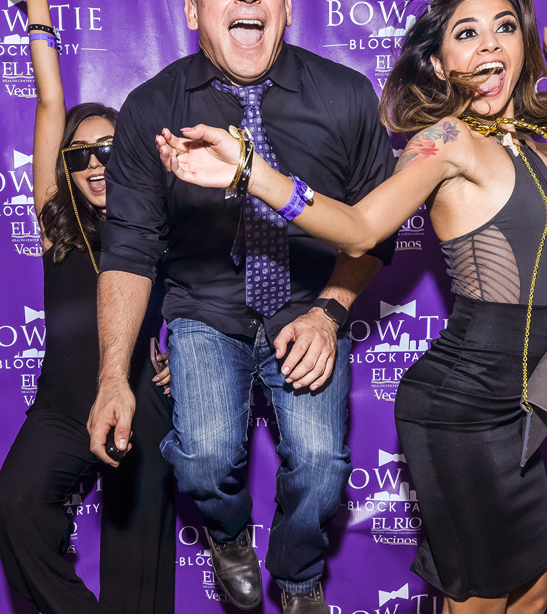

I studied film at Loyola Marymount back in the 90’s. After working for Disney and MTV for a while, I figured out that graphic design was more my speed. It turns out that I could not fulfill my lifelong dream of writing for the sitcom Cheers. It had been off the air for 10 years by the time I got to college.
So I started creating titles for student films and learning Photoshop. Photoshop actually fit on two floppy discs. I tried making fake ID’s in my dorm room with my Mac LC and Apple LaserWriter. None of the fake ID’s worked as they were printed in black and white.
Passionate and curious about design, people, and business, the favorite part of my career has been the people that I’ve had the honor to work with during my time as a designer. Yup. That’s me with Too $hort.
I spent a week with Jack Canfield a few years ago. He refused to trade shirts with me. That guy in the background is named Tom. He was Canadian.
So I started creating titles for student films and learning Photoshop. Photoshop actually fit on two floppy discs. I tried making fake ID’s in my dorm room with my Mac LC and Apple LaserWriter. None of the fake ID’s worked as they were printed in black and white.
Passionate and curious about design, people, and business, the favorite part of my career has been the people that I’ve had the honor to work with during my time as a designer. Yup. That’s me with Too $hort.
I spent a week with Jack Canfield a few years ago. He refused to trade shirts with me. That guy in the background is named Tom. He was Canadian.